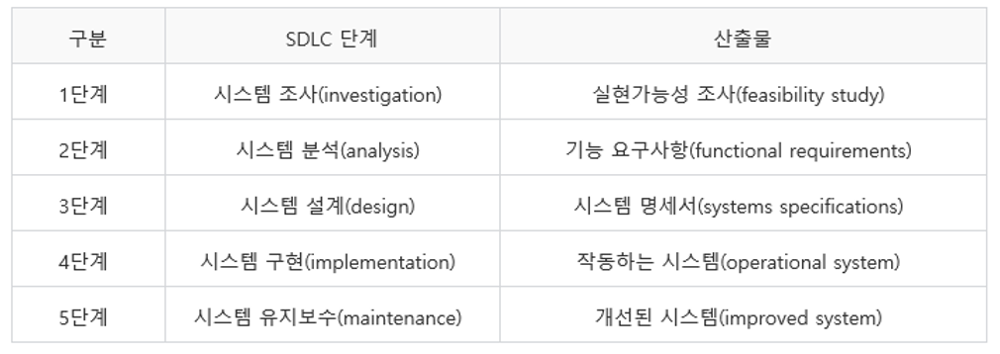
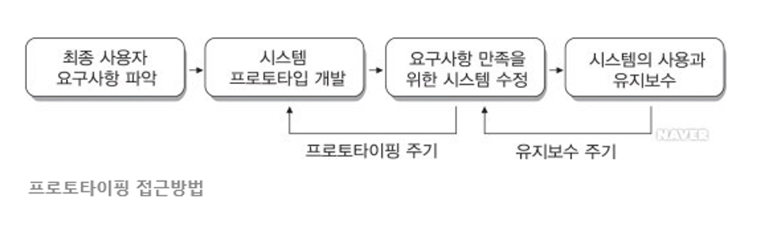
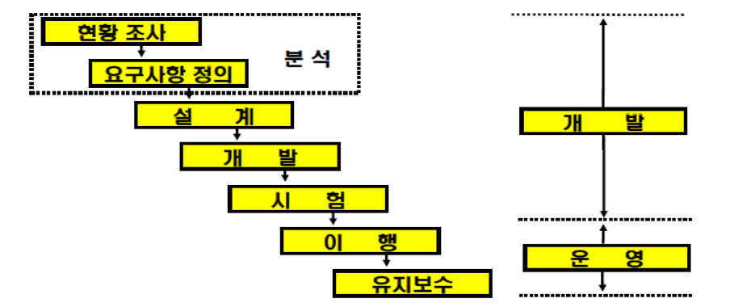

MIS 접근방법
(1) 시스템 접근방법
시스템 접근방법(systems approach)은 문제점과 기회를 정의하고 해결책을 개발하는데 자주 도입되는 방법이다.
즉, 문제점을 발견하고 해결책을 고안하기 위한 것으로 다음과 같은 행위들로 구성된다.
① 시스템 사고(systems thinking)를 통해서 문제점이나 기회요소를 인식하여 정의한다.
② 해결책의 대안을 개발하고 평가한다.
③ 요구사항을 가장 잘 충족시키는 시스템 해결책을 선택한다.
④ 선택된 시스템을 설계한다.
⑤ 설계된 시스템을 구현하고 그 결과를 평가한다.
(2) 정보시스템 개발주기
시스템 접근방법을 적용하여 정보시스템을 개발하는 과정은 정보시스템 개발주기라 부르는 다단계 과정으로 간주된다.
정보시스템 개발주기는 시스템 개발 생명주기(SDLC: Systems Development Life Cycle)라고도 한다. 일반적으로 SDLC는 다음과 같이 5단계로 구성된다.
√ SDLC의 5단계와 산출물

(3) 프로토타이핑
프로토타이핑(prototyping)은 새롭게 개발한 경영정보시스템의 해결책에 대한 일반적인 작업모형 또는 프로토타입(원형, prototype)을 신속하게 개발하고
테스트하는 방법을 말한다. 프로토타이핑 방법은 정보시스템 전문가와 비즈니스 전문가가 다함께 참여하여 상호 협력적이고 상호 반복적인 작업과정을 통해
현실과 가장 적합한 시스템을 만드는 것이다.

(4) 생명주기 접근법 (폭포수모형-Waterfall Model)
생명주기 접근법은 몇 개의 순차적인 단계로 구분된다. 매단계의 결과는 철저히 검토된 후, 다음 단계로 진행된다.
뒷 단계에서는 이전 단계의 결과를 바탕으로 해당 단계에 부여된 과업만 수행하게 된다. 그러나 특별한 상황 발생되면, 이전 단계로 Feedback되어야 한다.
